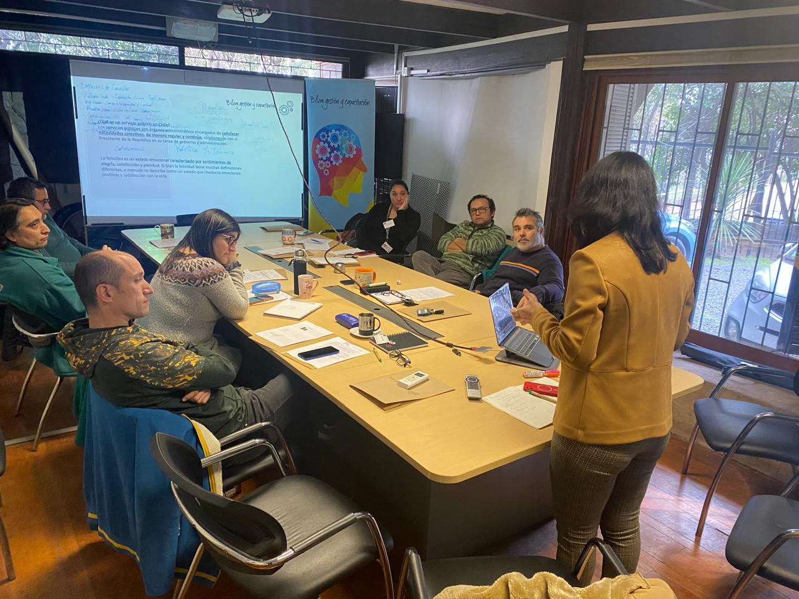

Apoyamos a organismos públicos, municipalidades y organizaciones que buscan mejorar procesos, desarrollar capacidades y abordar desafíos de gestión con herramientas aplicables al trabajo real.
Solicitar ReuniónBases de licitación y procesos de compra.
Control y seguimiento contractual.
Aplicación práctica de IA en el trabajo.
Herramientas y metodologías para fortalecer la gestión institucional.
Diseño, seguimiento y evaluación de objetivos e iniciativas.
Desarrollo de capacidades para mejorar coordinación y desempeño organizacional.
Nuestro enfoque combina capacitación, asesoría y acompañamiento para facilitar la aplicación práctica de conocimientos y apoyar procesos de mejora organizacional.
Apoyamos procesos de fortalecimiento organizacional mediante capacitación, asesoría y acompañamiento orientados a resultados.
